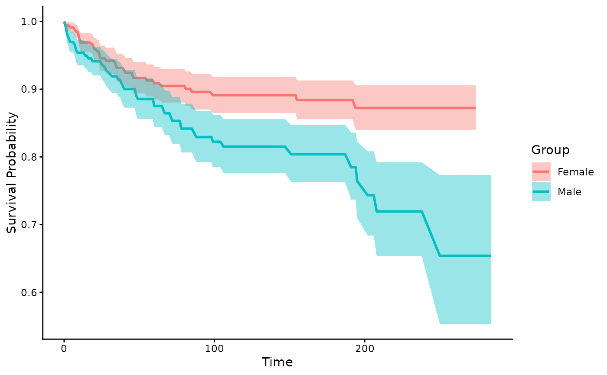
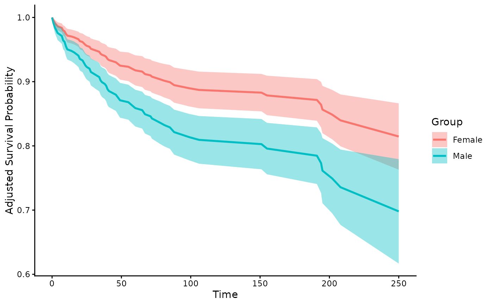
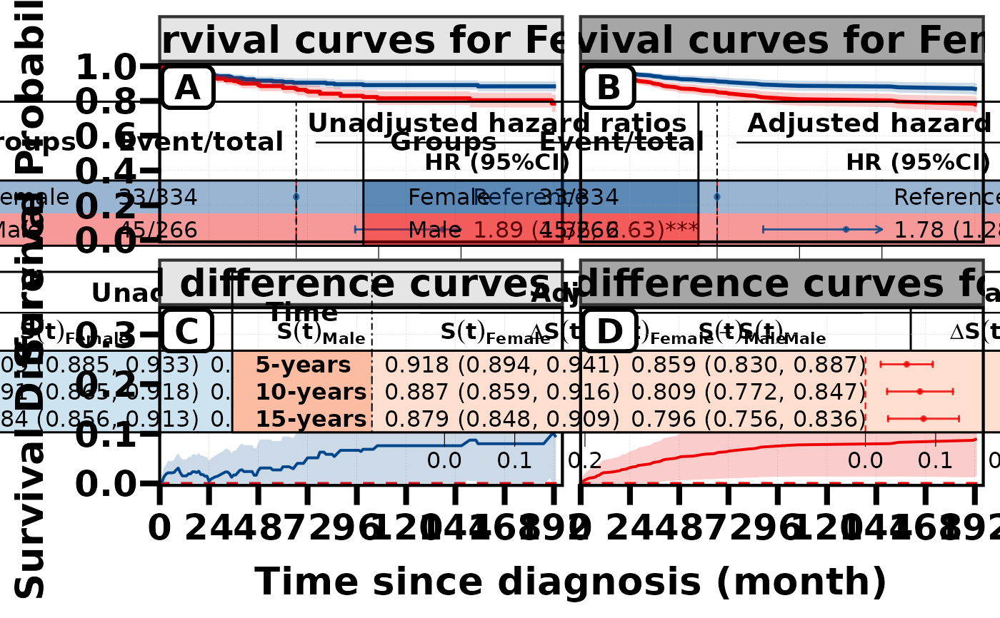
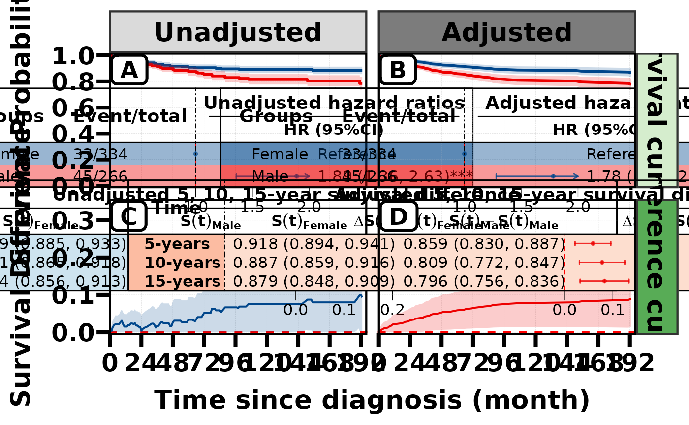

Add facet-grid-style strips to a patchwork grid (top headers + side labels)
Source:R/fmt_plot.R
fmt_strip2.RdFor an assembled patchwork laid out as an `nrow x ncol` grid (filled **by row**), add facet_grid-style strips: column-header strips only on the **top row** and row-label strips only on the **right-most column** (rotated). This avoids [fmt_strip()]'s behaviour of putting a top strip on *every* panel – which looks cluttered when the grid encodes two crossed dimensions (e.g. plot-type across columns, a stratifier down rows).
Usage
fmt_strip2(
plot,
top_label = NULL,
right_label = NULL,
ncol = NULL,
top_fill = NULL,
right_fill = NULL,
label_color = "black",
top_right_fill = c("Grays", "Greens")
)Arguments
- plot
A patchwork (or list) of ggplot panels filling an `nrow x ncol` grid **by row**.
- top_label
Character vector of column-header labels (length `ncol`, recycled). Placed on the top-row panels only. `NULL` = no top strips.
- right_label
Character vector of row labels (length `nrow`, recycled). Placed on the right-most-column panels only (rotated 90 degrees). `NULL` = no right strips.
- ncol
Number of columns in the grid. If `NULL`, inferred from the patchwork layout (`$patches$layout$ncol`/`nrow`), falling back to `ceiling(sqrt(n))`.
- top_fill, right_fill
Background fill colour(s) for the top / right strips (recycled to `ncol` / `nrow`). `NULL` = light grey when `top_right_fill = NULL`.
- label_color
Strip text colour. Default `"black"`.
- top_right_fill
Character vector of one or two `colorspace` sequential HCL palette names used to generate the top and right fills. The first palette is used for top strips and the second for right strips; a single palette is reused for both directions. Defaults to `c("Grays", "Greens")`. Explicit `top_fill` and `right_fill` values take precedence.
Details
Typical use: a `get_vpd(EXP.obj, c(stratifier, exposure))` result flattened via [flatten_patchwork()] into a `4 x 2` grid (rows = stratifier levels, columns = Variable / Partial dependence plot) – `fmt_strip2()` then labels the two columns on top and the four rows on the right.
In RegR, RegR::get_rcs_all() uses this
helper for its shared-strip 2 x 2 composites when `strip_style = "grid"`.
See also
[fmt_strip()] for per-panel top strips;
RegR::get_rcs_all() for the higher-level
RCS composite that uses this helper with `strip_style = "grid"`.
Other plot formatting:
fmt_axis(),
fmt_axisText(),
fmt_axisTile(),
fmt_bg(),
fmt_boxplot(),
fmt_com(),
fmt_expand(),
fmt_his(),
fmt_legend(),
fmt_panel(),
fmt_plot(),
fmt_plot_base(),
fmt_point(),
fmt_raster(),
fmt_ref(),
fmt_scale(),
fmt_strip(),
fmt_tag(),
fmt_text()
Examples
library(dplyr)
#>
#> Attaching package: ‘dplyr’
#> The following objects are masked from ‘package:stats’:
#>
#> filter, lag
#> The following objects are masked from ‘package:base’:
#>
#> intersect, setdiff, setequal, union
data(seer_thyroid_mtc_2026, package = "RegR")
d <- as.data.frame(seer_thyroid_mtc_2026)
d <- d[seq_len(min(600L, nrow(d))), , drop = FALSE]
d <- d[
!is.na(d[["DSS"]]) & !is.na(d[["time"]]) & d[["time"]] > 0,
,
drop = FALSE
]
d[["DSS"]] <- as.numeric(d[["DSS"]])
cat_sur <- NULL
invisible(capture.output(
cat_sur <- suppressWarnings(suppressMessages(
RegR::get_cat(
d,
cat_var = "Sex",
adj_var = "Age",
surv = TRUE,
conf_level = 0.85,
timepoint = 120,
time_dif = c(60, 120, 180),
methods = c("unadj", "direct")
)
))
))


p <- RegR::plt_cat2(
cat_sur,
max_t = 193,
xbreaks = seq(0, 193, 24),
unadj_steps = TRUE,
sur_arg = list(
ylim = c(0, 1),
ybre = seq(0, 1, 0.2),
xlim = c(1, 2),
ticks_at = c(1, 1.5, 2),
ticks_digits = 1
),
dif_arg = list(
ylim = c(0, 0.35),
ybre = seq(-0.1, 1, 0.1),
xlim = c(0, 0.28),
ticks_at = c(0, 0.1, 0.2),
ticks_digits = 1
),
cat_names = "Female vs. Male",
color_pal = "lancet"
)
#> Loading required namespace: pammtools
#> refline_col will be deprecated, use refline_gp instead.
#> footnote_cex, footnote_fontface, footnote_col will be deprecated, use footnote_gp instead.
#> Warning: `aes_()` was deprecated in ggplot2 3.0.0.
#> ℹ Please use tidy evaluation idioms with `aes()`
#> ℹ The deprecated feature was likely used in the ggplotify package.
#> Please report the issue at
#> <https://github.com/GuangchuangYu/ggplotify/issues>.
#> refline_col will be deprecated, use refline_gp instead.
#> footnote_cex, footnote_fontface, footnote_col will be deprecated, use footnote_gp instead.
#> refline_col will be deprecated, use refline_gp instead.
#> footnote_cex, footnote_fontface, footnote_col will be deprecated, use footnote_gp instead.
#> refline_col will be deprecated, use refline_gp instead.
#> footnote_cex, footnote_fontface, footnote_col will be deprecated, use footnote_gp instead.
#> Registered S3 methods overwritten by 'ggpp':
#> method from
#> heightDetails.titleGrob ggplot2
#> widthDetails.titleGrob ggplot2
print(p)

p %>% fmt_strip2(
top_label = c("Unadjusted", "Adjusted"),
right_label = c("Survival curves", "Difference curves"),
top_right_fill = c("Grays", "Greens")
)
